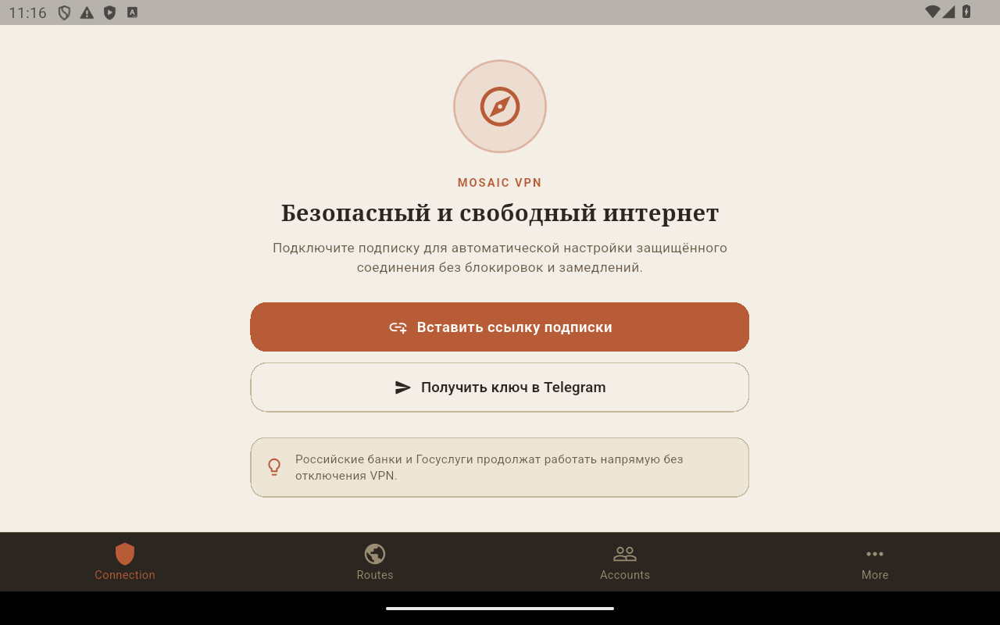
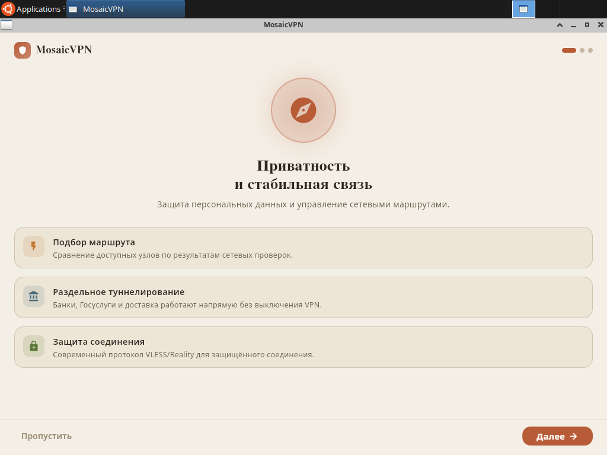

SNAPSHOT · ТЕСТОВЫЙ КАНАЛ
Смартгруппы и хэндовер сетей: тестовая сборка
Snapshot 20260912-smartgroups. Экспериментальный срез для тестирования переключения сетей и смартгрупп. Стабильные релизы и автообновление не затронуты.
Контрольные суммы SHA-256 · Манифест состава сборки (JSON)
Android (Universal APK)
Скачать Android snapshot (.apk)
SHA-256: 77f70f1742858e256f459cd55b226769872b1bfac343c65658b181ce87da4858
Собрано с многоплатформенным libbox.aar (ARM64, ARMv7, x86_64). Протестирована установка и запуск MainActivity в Android 14, проинициализированы нативные компоненты, проверена реакция VpnService и UnderlyingNetworkPolicy на переключение сетевых интерфейсов (Wi-Fi on/off). Изолирована группа Free LTE.
Linux x64
Скачать Linux snapshot (.tar.gz)
SHA-256: d60ce27dd1ba8e6183bdab4a3c0e94b3dd4e35503a492ea8b5502d18632f38d8
В архиве Flutter-клиент, mosaicd и sing-box 1.13.18. Требуются GTK 3, libsecret и Ayatana AppIndicator.
Что проверено
- Сетевое ядро sing-box v1.13.18: пересобрана нативная библиотека
libbox.aarсо всеми тремя ABI (arm64, armv7, x86_64), подтверждено наличиеlibbox.soв APK. - Android Network Handover: нативная политика сетей
UnderlyingNetworkPolicy.ktс приоритетом дефолтной валидированной сети, отсечением служебных сетей без INTERNET и расчетом fingerprint без утечки IP/SSID. Все 5 регрессионных тестов Kotlin пройдены. - Тесты Flutter: 166 невизуальных тестов успешно пройдены (включая проверку изоляции группы
free-lteи трансляциюnetworkFingerprint). - Нативный запуск на Android 14: APK успешно установлен на эмулятор, MainActivity стартует в Impeller (OpenGLES), экраны онбординга, подключения, маршрутов и настроек отрендерены без падений.
- Linux-сборка: запуск GUI и Go-демона в песочнице, проверка изоляции туннеля и строгой валидации HTTP 204.
Известные ограничения
- Полноценный E2E-тест Free LTE в боевых сетях сотовых операторов (LTE/5G) требует полевого тестирования на физическом устройстве с SIM-картой.
- Изолированный параллельный probe кандидатов на Android находится в процессе доработки (выбор ноды сейчас выполняет нативный sing-box urltest).
- Сборка является тестовой (snapshot) и не перезаписывает стабильные релизы.
Снимки запуска
Интерфейс Android-приложения после установки APK:

Интерфейс Linux-приложения в песочнице:

Тестовая сборка без гарантий стабильности. Подписки и личные данные в архив не включены.